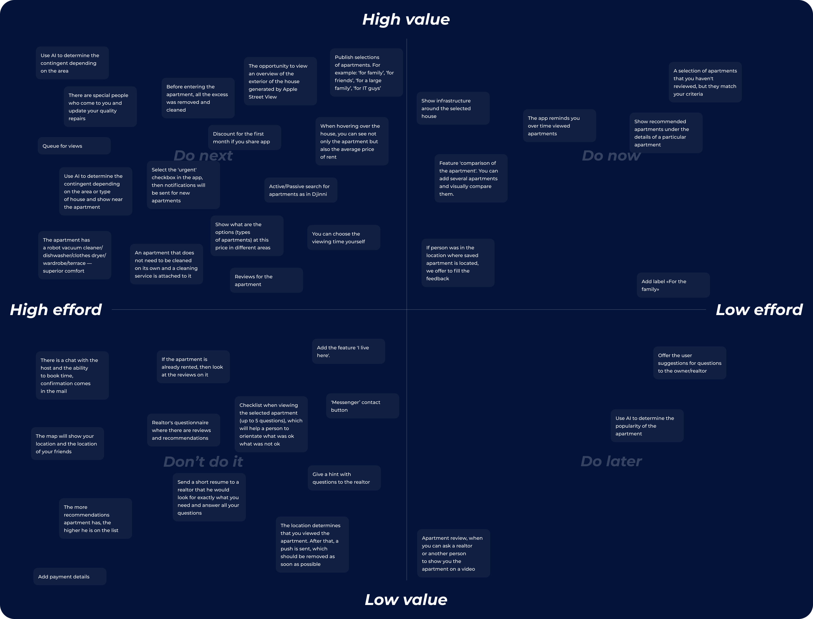
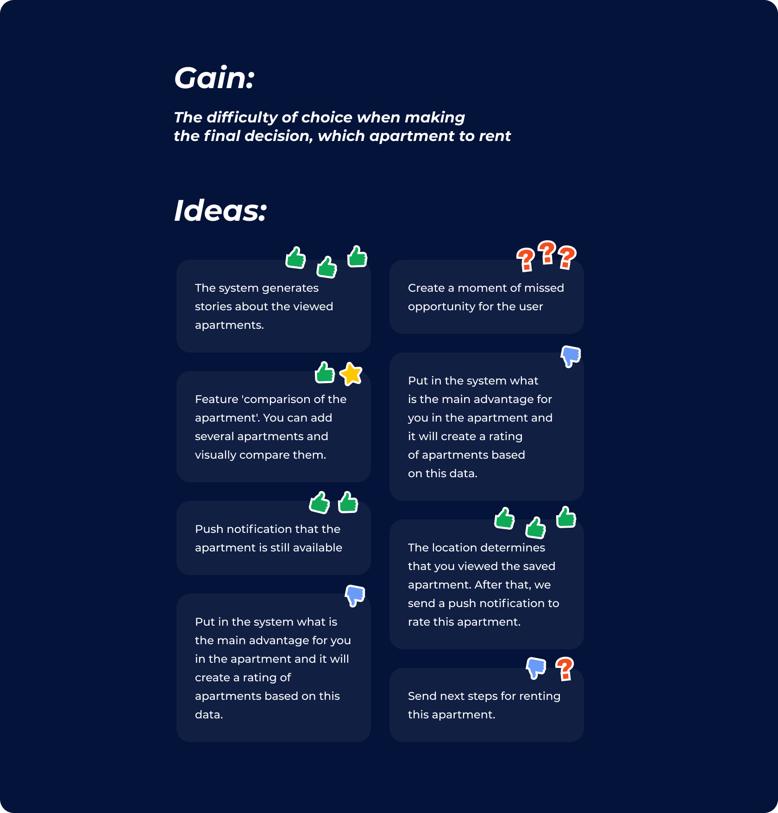
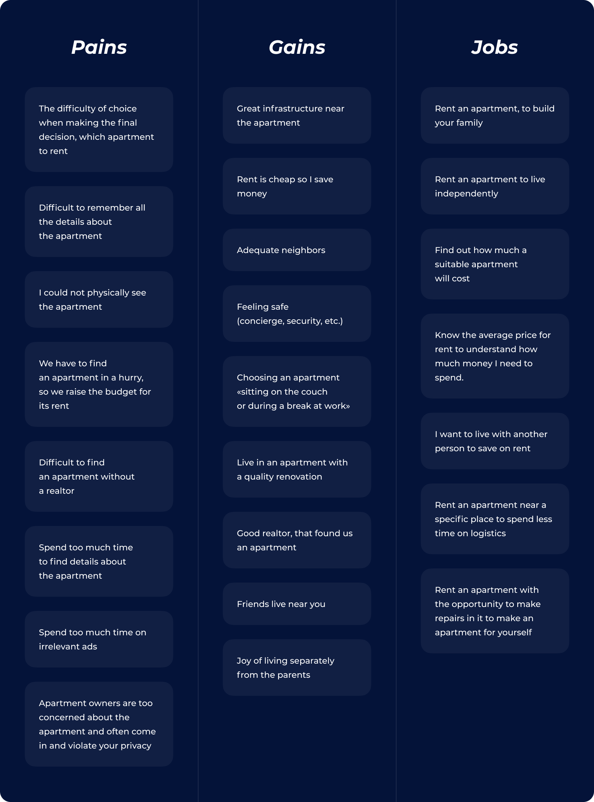
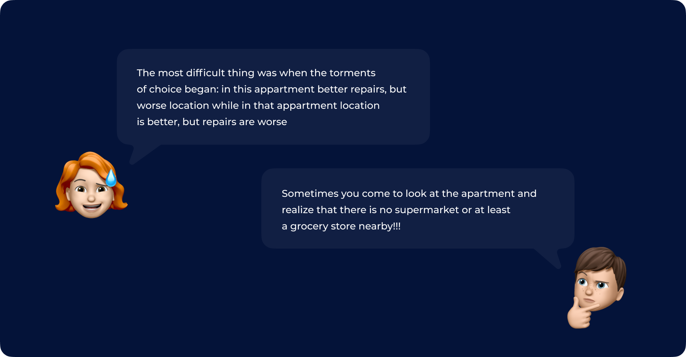
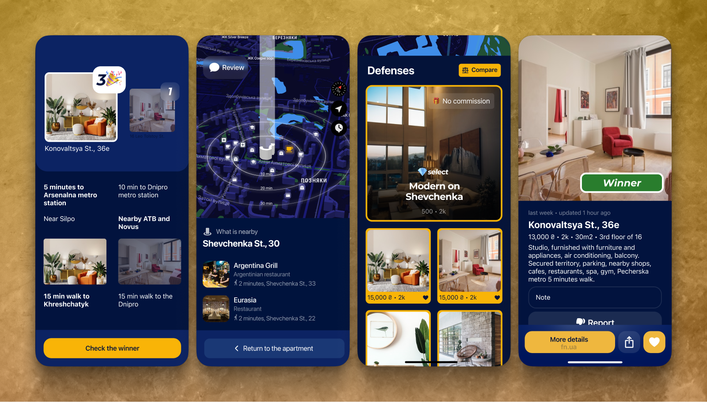

Optimizing AI-Powered Apartment Search at Bird
At Bird, I set out to solve a problem every renter knows too well: starting with one idea of an apartment and ending up somewhere completely different.
Our job was to redesign the app so people could find what they really wanted, faster. Along the way, I dug into the messy reality of “floating filters” — how budgets shift, locations expand, and needs evolve mid-search. Bird has already helped more than 200,000 people find a home, and this was my part in making that journey smoother.

Design process
Discover → Define → Ideate → Prototype & Test
Discovery
After defining the goals, problems, and audience, we spoke with potential clients to learn about their experience searching for a place to rent.
Here are some interesting insights:

Define
After that, we analyzed the interviews and highlighted the main takeaways. We divided these insights into three types:
- Jobs (what users did)
- Gains (the positive moments during the apartment search)
- Pains (the issues and difficulties respondents faced)

Develop
Using insights from the interviews, we held a few brainstorming sessions. As a result, we generated ~240 ideas for improving the user experience.
Below, you can see the ideas we generated for one of the user pain points:

Deliver
Of course, not all of the ideas were good, so we decided to select the best ones and prioritize them using a prioritization matrix:

Hypotheses
The next step was to turn our best ideas into hypotheses:

UI design & usability testing
Since our client already had a style guide, we moved straight into UI design. We conducted usability testing to identify issues in our designs and improve them between testing rounds.
Feature #1: Apartments comparison
Hypothesis
The user cannot decide between the two apartments that suit him best, so we allow him to compare these options, which will increase the click-through rate.
Solution
We wanted to create a completely new experience, not just a way to compare boring data.
It all starts when a user opens their favorites. After the user clicks the 'Compare' button, the app suggests choosing two apartments to compare.
The app automatically generates stories with facts about each apartment. The user then selects the fact they like better.
After completing the quiz, the app suggests that the user check more details about the apartment that won.
Feature #2: Nearby places
Hypothesis
The user wants to know more about a specific district, so we will show him the places around the selected apartment, which will increase the click-through rate.
Solution
The main challenge was creating a UI that felt light yet informative.
We solved this by dividing the feature into two parts. The user can quickly glance at the map to get a general understanding of the infrastructure. At the same time, if they want to dive deeper, they can swipe up and see the full list of nearby places.
Key Results & Impact
The main principle of the Bird app is Love ❤️. Love appears when the user receives more from the product than they expect. We kept that in mind while designing these features. And it helped us stand out among other teams and win this project.